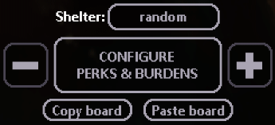
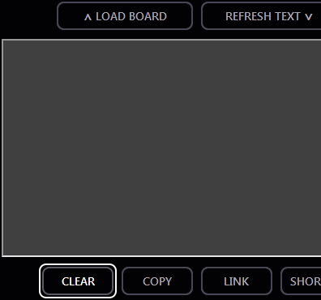

Bingo Board Viewer, by T3sl4co1l. Supports Rain World Bingo Mod up to version 1.26.
In-game, while configuring the board and selecting challenges, press the "Copy board" button:

Switch to this browser window. Click on the CREATE navigation button. Scroll down to the large textbox. Press CLEAR. Focus the large textbox, and Paste into it:

Copied text can also pasted into chats, discussion boards, forums, etc. for easy sharing, or as a text file (*.TXT) for local storage. Saved text can be loaded by clicking Choose File/Browse..., or drag-and-dropping a text file into the file-load widget. Whatever the method, the text content is loaded into the textbox for visual confirmation (and manual editing as needed).
Stored board text (in the textbox) can be copied (press the COPY button, or select all and copy), and pasted into any other location, including in-game when configuring the board (press the "Paste board" button).
For convenience, pasting into an empty textbox also triggers parsing. Parsing takes in any valid goals and renders them as goal squares, recreating the in-game view. Squares can be clicked to view a detailed description. The board can also be navigated by focusing it, then using arrow keys to move the cursor around.
The board view and current URL are updated together. The board is encoded in the URL, in a shorthand form; a typical board is around 3kB, a typical URL around 300 bytes (yeah, this is still a bit long, but tolerable). The URL can be copied, and shared anywhere that accepts URLs. The encoded board can be read anywhere with an internet connection (or a local copy of the viewer).
Clicking a square on the board view, shows details for that challenge: full name, a description of the goal, and all parameters and values used in it.
"Kibitzing" enables additional commentary: useful details or hints when a goal might not be exactly obvious, or full data of otherwise-hidden goals.
Review the board before sharing! Goals may not read properly (particularly likely with customized options, or after mod updates; take note of the current version, and currently supported version!), and error squares take up extra space in the URL. Doesn't hurt to double-check the URL as well: simply refresh the page, to load it from the encoded data in the URL. (If you find the URL is ponderously large for a given board size, there are probably errors in it!) If any squares have changed, or become errors afterwards, a bug report is welcome!
Errors show up as a null symbol "∅"; read that square's description to see what parameter(s) failed. If corrections are needed, or manual edits made, do them in the text box, then press PARSE. (The error also includes the original goal string (or as much as fits), so that the original goal can (probably) be reconstructed manually.) Parsing also removes extraneous white space, in case you had spaced things out for easier editing.
In lieu of a proper board editor (or customizer), using a featureful text editor like Notepad++ is recommended. First, find-and-replace "bChG" with " bChG\n". That is, add a space before, and a newline after, these letters. Use the "Extended" mode that supports escaped characters (like '\n'). Goals are much easier to see and move around this way. Structure is regular: BingoChallengeName∼param1><param2><.... Parameters are (usually) verbose, including metadata related to the selection box (type, title, position on the in-game configure menu, list to choose from).
On the CREATE page, pressing LINK opens a tab to the viewer, using a long URL that encodes the board data. This link can be stored and accessed at any time (given one has access to the viewer page). The basic viewer does not store any data remotely.
On the CREATE page, pressing SHORTEN does transmit data to a server. This service is offered voluntarily; it may become unavailable at any time, due to congestion, outage, maintenance, abuse, or just not being able to support it anymore. DO NOT rely on shortened links for persistent storage. Keep backups (the long URL, or text) of anything you want to save.
This tool does not use cookies.
Videocult and co. for Rain World, Nacu for putting in the work on Bingo, and ICED37 for making it happen; shrubfromtomorrow for continuing the project; Gzethicus and DrekiOrmur for contributions; and alphappy and diedirl for help with assets and tips on inner workings.